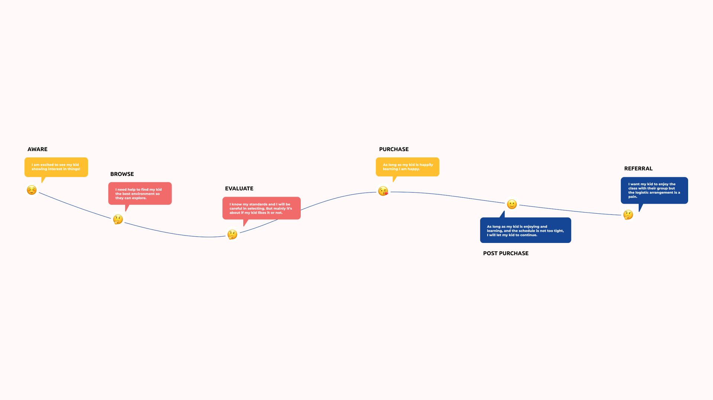

Customer Journey Map
Big Bang Academy is an ed-tech startup offering STEM education for children aged 3–12. After two years focused primarily on curriculum, the company wanted to reassess its market positioning and business strategy. I was brought in to lead the customer research, conducting interviews across three languages, synthesising findings into a customer journey map, and using it to align the company on a new strategic direction.
Research
I conducted in-depth interviews with parents, school teachers, and educational psychologists. Interviews were conducted in Cantonese, English, and Mandarin to accurately represent the diversity of the company's target market. The research covered how parents evaluate and select STEM providers, what role teachers and specialists play in that process, and what parents actually expect their children to gain at different ages.
A key finding was the knowledge gap: most parents did not feel confident assessing STEM courses directly, so they substituted observable proxies, their child's engagement in the session, and the teacher's apparent enthusiasm. This meant that marketing the curriculum content was less effective than demonstrating visible, in-session engagement. The research also revealed a sharp shift in expectations at age 7, where parents began expecting technical retention rather than just exposure, a distinction the company's messaging had not been making.

Customer journey map

I synthesised the findings into a customer journey map tracing the full decision-making process, from initial awareness through to referral behaviour, across parent segments. The map made the research actionable: it identified the specific moments where Big Bang Academy was losing parents, and the levers most likely to convert or retain them.
The journey map was used to align the founding team and investors on a revised business focus and communication strategy. I also redesigned the company website in Webflow to reflect the new positioning.